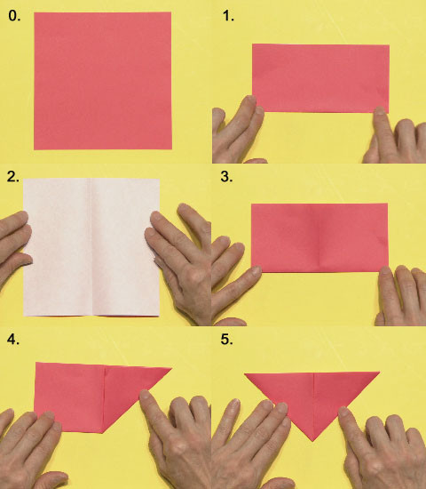
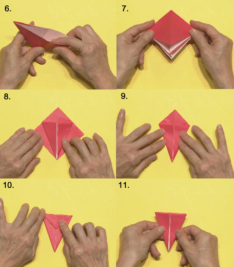
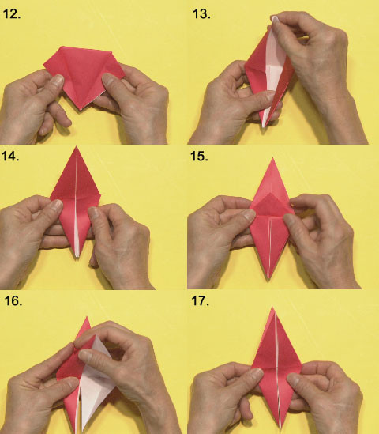
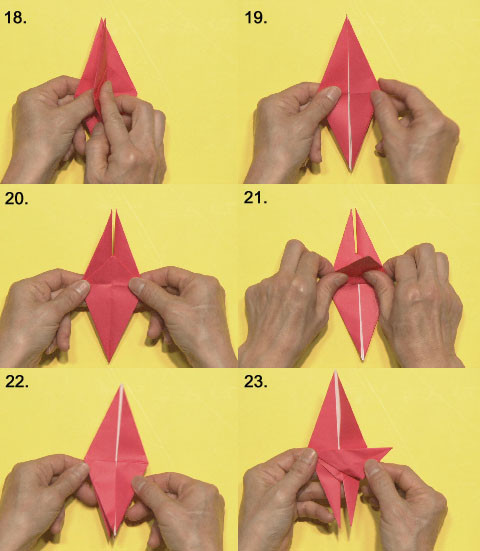
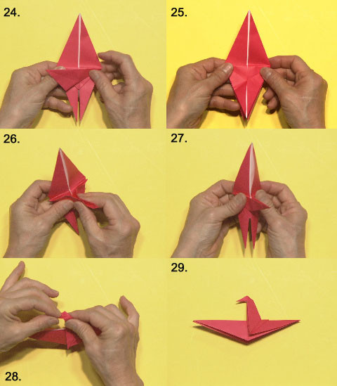

2015年10月06日 (火)「水飲み鳥」のおりかた［ITAISEN職員］
きょうの放送で紹介した、「水飲み鳥」のおりかたをみんなに教えよう。
かんたんなので、ぜひチャレンジしてくれ。
０、 おりがみを用意！
１、 ふたつにおる
２、 ひらいてうらがえす
３、 またふたつにおる
４、 まんなかの線にあわせて、図のようにおる
５、 うらがえして、４と同じようにおる

６、 まんなかから開いておりたたむ
７、 開いている方を下にして・・・
８、 左右をこんなふうにおる
９、 うらがえして、８と同じようにおる
１０、 上の部分をおる
１１、 うらがえすとこんなかんじ
１２、 左右にひらいて・・・
１３、 上にひらきながら左右をたたみ・・・
１４、 ひしがたにする
１５、 うらがえして、まんなかの三角形の部分を上におりかえす
１６、 １２・１３のやりかたでひしがたに
１７、 こんなかたちになったかな？
１８、 右から左に一枚めくってから・・・
１９、 うらがえす
２０、 また、右から左に一枚めくるとこんなかたちに
２１、 下から上に一枚めくって、
２２、 上下さかさまにするとこうなる
２３、 鳥の首の部分をつくるぞ！まず、おり目をつけて・・・

２４、 いったんもどして、また、おり目をつける
２５、 ２３、２４のおり目を確認して・・・
２６、 首を立てる
２７、 左右をおりたたんだら・・・
２８、 顔をつくって・・・
２９、 できあがり！
投稿者:ITAISEN職員 | 投稿時間:18時30分